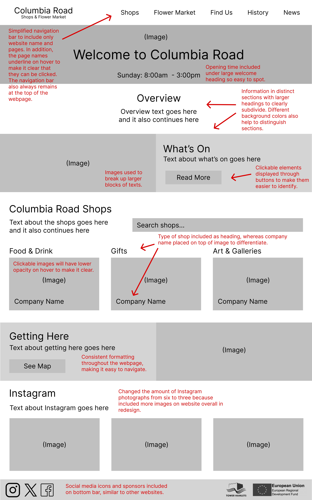
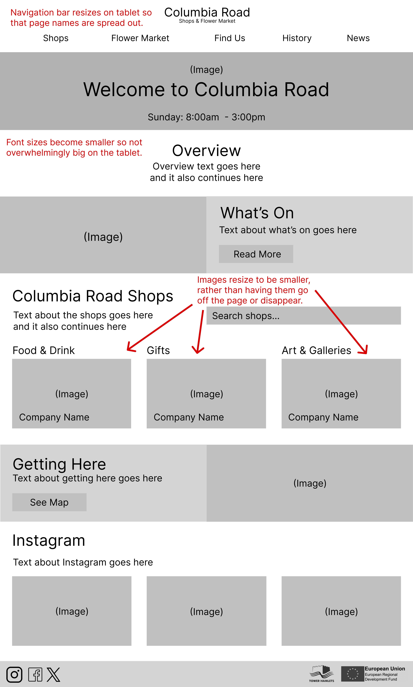
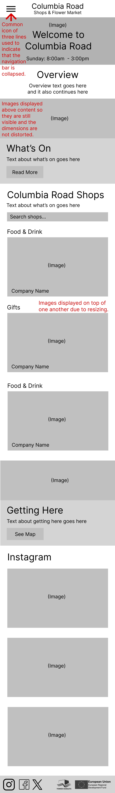
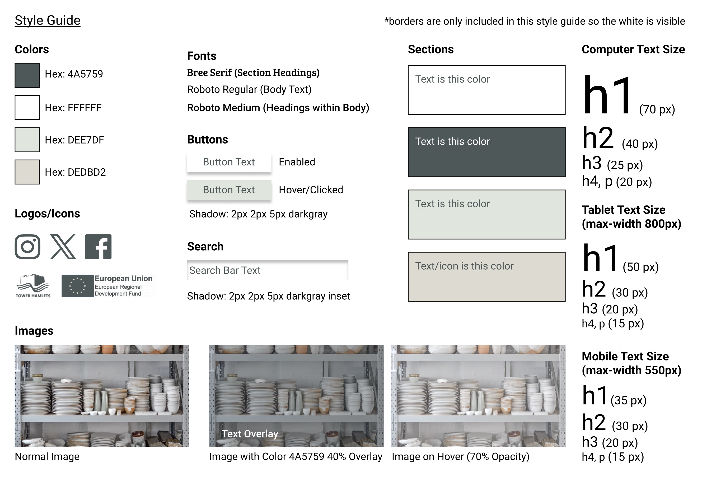
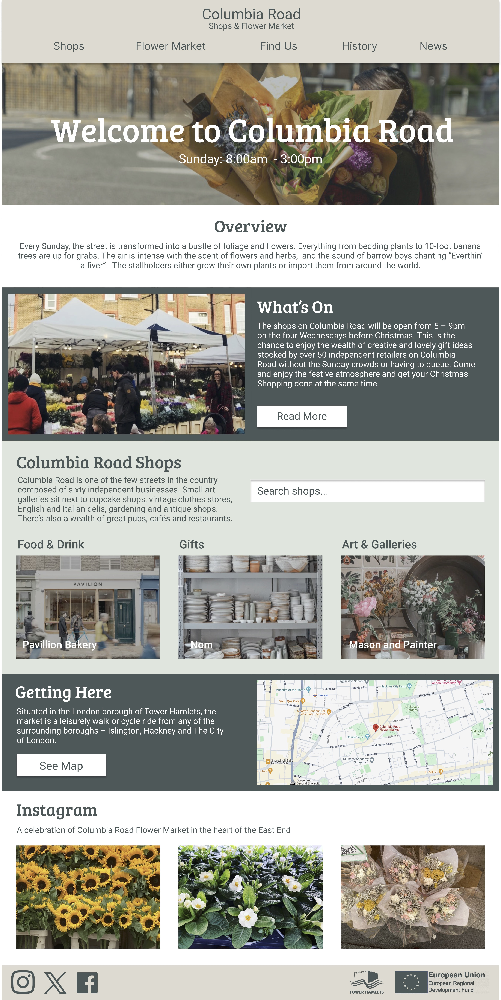
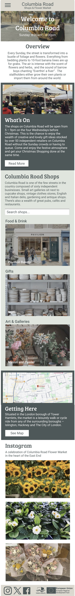

Overview
The goal of this project was to redesign an existing website to make it more usable, accessible and responsive across various screen sizes (computer, tablet and mobile). I engaged in the design process, from sketching to hi-fi mockups, and then used HTML and CSS to code the interface!
Role
UI/UX Designer and Front End Engineer
Timeline
February - March 2024
Problem
Visit the website here!
Why this website?
Columbia Road, in London, is often bustling on Sundays with a flower market and many local shops. However, I feel that the existing Columbia Road website lacks visual hierarchy and is not intuitive to use, which is unfortunate given the vibrant energy in this part of London.
Usability
Little visual distinction between different sections
-
Since the font weights and sizing are inconsistent in this part of the website, it is difficult to find information quickly
-
Unclear what text and images are clickable since they looks visually the same as the rest of the paragraphs and images
Navigation bar is not sticky
-
When resizing the interface, one of the shops disappears, yet there is a space in its place. This can be confusing to users as to why there is a discrepancy between different screen sizes.
Accessibility
-
Links hidden behind graphic elements (which may be confusing to screenreaders)
-
When resizing the interface to tablet or mobile, one of the shop images dissapears yet the link remains
Sketches
I drew nine sketches to brainstorm the layouts, and then, I combined my favorite elements of the speed sketches to make a final sketch.
Low Fidelity Wireframes
The wireframes below are annotated in red to show how my redesign improves the previously mentioned usability and accessibility problems.
Computer:
Tablet:
Mobile:
Style Guide
My style guide allowed me to visualize the colors, fonts, icons and effects of the website.
High Fidelity Wireframes
Using the style guide, I could bring the low-fidelity wireframe to life as a high-fidelity mock up. During this process, I made revisions to my sketches, low-fidelity wireframes and style guide when I wanted to add or remove an element now that I could see the design with styling.
Computer:

Tablet:
Mobile:
Website
You can visit my redesigned website here!
This project taught me a lot about the design process, and I hope to continue using these practices when creating websites in the future.